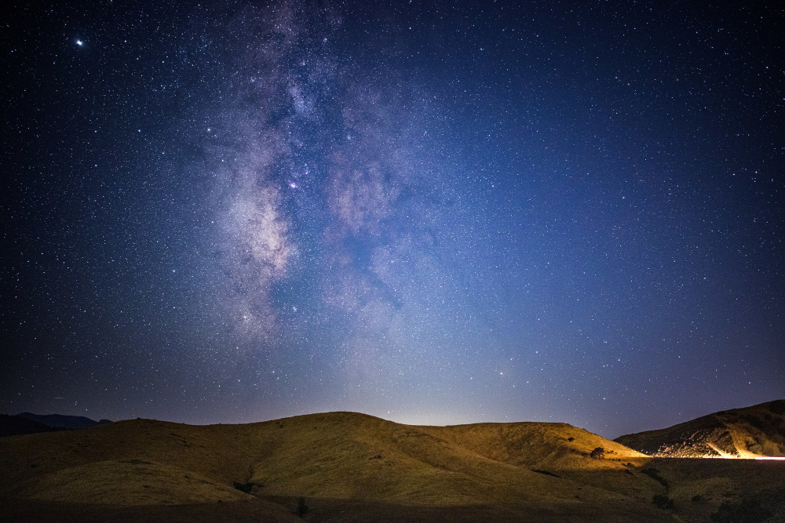

What Are Stars?
Stars are massive celestial bodies made mostly of hydrogen and helium, undergoing nuclear fusion to produce light and heat. They form in clouds of gas and dust, and their life cycle ranges from millions to billions of years.
Types of Stars
- Main Sequence Stars: These stars are in the most stable phase of their life cycle, like our Sun.
- Red Giants: Older stars that have expanded and cooled as they run out of fuel.
- Neutron Stars: Extremely dense stars formed from the remnants of supernova explosions.

Explore Black Holes Next
A mesmerizing star cluster.